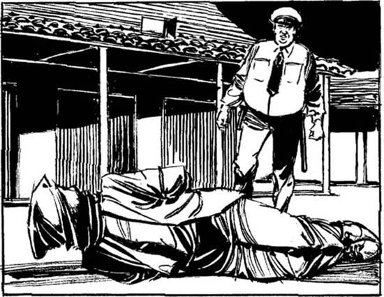

6
Listen to Part 1:

Trở về L.A.
Tôi tỉnh dậy. Tôi đang nằm dưới đất. Tôi đang ở đâu? Tôi không biết!
Rồi tôi nhớ ra. Tôi đang ở khu chuồng ngựa ở trường đua ngựa Santa Rosita. Hai tay tôi bị trói ra sau lưng và có một chiếc túi trùm lên đầu! Toàn thân tôi đau nhức.
Chuyện gì đã xảy ra với tôi? Tôi nhớ đến hai người đàn ông đó. Tôi đã nằm trên đất bao lâu rồi? Tôi cố gắng suy nghĩ.
Rồi tôi nghe thấy một giọng nói. "Anh là ai? Chuyện gì đang xảy ra ở đây?"
Tôi biết giọng nói đó! Đó là Slim.

Tôi không trả lời. Slim kéo chiếc túi ra khỏi đầu tôi, rồi nhanh chóng tháo dây thừng. Tôi cử động cánh tay. Tôi từ từ đứng dậy. Lúc này trời đã tối. Tôi đã bị trói trong một thời gian dài.
Slim hỏi: "Lenny! Sao anh lại bị trói thế này?"
Tôi mỉm cười. Tôi nói: "Xin chào, Slim. Em mệt quá. Em nằm xuống đây để ngủ. Trong khi em ngủ, có người trói em lại. Và họ trùm chiếc túi này lên đầu em!"
Listen to Part 2:
"Lenny, đừng đùa nữa. Anh lo lắng cho anh lắm. Anh không trả lại thẻ an ninh", Slim nói. "Anh đã tìm anh cả tiếng đồng hồ rồi. Chuyện gì đã xảy ra vậy?"
Tôi trả lời: "Em không biết. Có ai đó đánh em vào đầu. Họ trùm một chiếc túi lên đầu em và trói tay em bằng một sợi dây thừng. Họ đá em. Em không thể kêu cứu. Em đã ngất đi!"
Slim hỏi: "Ai đã làm thế, Lenny? Anh quen ai ở đường đua này?"
Tôi nói: "Em chỉ quen anh, Slim. Em không quen ai khác ở đây". "Em không biết ai đã làm thế với em".
Tôi không muốn nói với Slim về Thủ lĩnh, hay về những người đàn ông trong chiếc xe 4x4 màu đỏ.
Tôi nói: "Có thể có người nào đó đã nhầm lẫn. Làm ơn quên chuyện này đi, Slim".
Slim nói: "Được rồi, có thể có người đã nhầm lẫn. Họ định giết một người khác, không phải anh!" Slim không tin câu chuyện của tôi. Anh ấy nói: "Anh đến văn phòng của anh và ngồi một lát đi".
Tôi đi cùng Slim đến văn phòng của anh ấy gần cổng. Tôi ngồi trên một chiếc ghế trong khi Slim pha cà phê. Anh ấy bắt đầu hỏi tôi thêm một số câu hỏi. Đột nhiên, điện thoại reo. Slim nghe máy. Rồi anh ấy cúp máy.
Anh ấy nói: "Anh ở đây nghỉ ngơi đi, Lenny. Anh phải đến văn phòng của quản lý một lát".
Slim rời khỏi văn phòng. Tôi nhanh chóng nghiêng người qua bàn và mở ngăn kéo. Có rất nhiều thẻ màu vàng và xanh trong ngăn kéo. Tôi lấy một thẻ màu xanh và nhét vào túi. Rồi tôi đóng ngăn kéo lại.
Listen to Part 3:
Giờ tôi muốn rời khỏi Santa Rosita càng nhanh càng tốt. Tôi để thẻ an ninh màu vàng trên bàn và đi đến bãi đậu xe.
Tôi lên xe Chrysler và nổ máy. Tôi lái xe trở về tòa nhà văn phòng của mình và đỗ xe. Toàn thân tôi đau nhức. Tôi bị đau đầu dữ dội.
Có một đèn đỏ trên máy trả lời điện thoại của tôi. Có một tin nhắn cho tôi. Nhưng tôi không nghe tin nhắn. Tôi mệt quá. Tôi nhìn đồng hồ. Bây giờ là 8 giờ 45 phút tối - giờ ăn tối! Nhưng tôi không muốn ăn gì. Tôi muốn ngủ.
Điện thoại reo. Tôi không trả lời điện thoại. Tôi không muốn nói chuyện với ai. Tôi lắng nghe máy trả lời ghi lại một tin nhắn khác.
"Xin chào, Lenny!", giọng nói từ máy trả lời nói. "Là Herman đây. Tôi gọi về khoản 1000 đô la của tôi. Tôi sẽ gặp anh vào ngày mai".
Herman! Tôi đưa tay vào túi. Tôi có 200 đô la mà Sandy đã đưa cho tôi. Không biết Herman có hài lòng với 200 đô la không? Tôi không muốn nghĩ đến vấn đề này.
Tôi đã ngủ thiếp đi.

Tôi thức giấc vào buổi sáng. Lúc đó khoảng 6 giờ 30 sáng. Tôi không bị đau đầu. Nhưng tôi rất mệt. Tôi đứng dậy và uống một ít nước. Rồi tôi lại ngồi vào ghế.
Tôi tự nhủ: "Mình sẽ ngủ thêm một tiếng nữa".
Listen to Part 4:
Chẳng mấy chốc, tôi đã mơ ngủ.